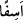

150. Musa, kızgın ve üzgün bir halde kavmine dönünce: “Benden sonra arkamda
ne kötü işler yapmışsınız! Rabbinizin emrini (beklemeyip) acele mi ettiniz?” dedi.
Tevrat levhalarını yere attı ve kardeşinin (Harun’un) başını tutup kendine doğru
çekmeye başladı. (Kardeşi): “Anam oğlu! Bu kavim beni cidden zayıf gördüler ve
nerede ise beni öldüreceklerdi. Sen de düşmanları bana güldürme ve beni bu zalim
kavimle beraber tutma!” dedi.
“Mûsâ,” Tur dağından “kavmine son derece kızgın bir halde dönünce:” “”,
şiddetli kızgınlık mânâsına gelir. Nitekim “Ne zaman ki bizi kızdırdılar, onlardan öç
aldık...” (ez-Zuhruf, 43/55) ayetinde de “esef” bu mânâdadır. Ayet-i kerime, Mûsâ
(a.s.)’ın Tûr’dan dönmeden önce kavminin buzağıyı tanrı edinip ona taptıklarını
bildiğini göstermektedir. Çünkü Allah Teâlâ, Tûr dağında gerçekleşen konuşma
esnasında kendisine kavminin buzağıya taptıklarını haber vermişti.
“Benden sonra arkamdan ne kötü işler yaptınız?” yani, ey buzağıya tapanlar, sizden
ayrılıp Tûr dağına gidince benim ardımdan ne kötü davrandınız! Ben dönünceye kadar
“Rabb’inizin emrini” yani, Allah’a verdiğiniz sözü ve Allah’ın emirlerini muhâfaza
ederek Mûsâ (a.s.) dönene kadar beklemeyip “acele mi ettiniz” dedi.”
“Acele”, bir işi vakti gelmeden önce yapmaktır. Bu sebeple acelecilik yerilmiştir.
Sür’at ise böyle değildir. Çünkü sür’at, bir ameli ilk vaktinde yapmaktan ibarettir.
et-Te’vîlâtü’n-Necmiyye’de şöyle denilmektedir: Ey ruhun sıfatları, vakti gelmeden
ve Rabb’inizin emri olmaksızın dünyaya, onun süslerine ve ona bağlanmaya dönmekte
acele mi ettiniz? Burada taleb erbâbının ve sülûk ehlinin Hakk’a ulaşmaktan geri
kalmamak için talep ve sülûk esnasında dünyadan hiçbir şeye iltifat etmeyip ona
bağlanmaktan sakınmaları gerektiğine işaret vardır. Onlar ancak nefis ve hevâ çölünü
geçip Mevlâ’ya vuslat Kâbesine ulaştıklarında, halkı Mevlâ’ya çağırmak, dünya ve
ukbâ yolunda olanları Hakk’a doğru alıp götürmek için dünyaya dönebilirler.
Tevrat’ın yazılı olduğu “levhaları” elinden “yere attı ve” İsrâiloğulları’nı buzağıya
tapmaktan alıkoymaya çalışmadığını sanarak “kardeşinin başını” Hârûn’un saçlarından
“tutup kendine doğru çekmeye başladı.” Yani hakaret etmek için değil azarlamak
maksadıyla onu kendine çekti.
Harûn (a.s.), Mûsâ (a.s.)’dan üç yaş büyüktü. Gayet tahammüllü ve yumuşak başlı idi.
Bu yüzden İsrâiloğulları onu daha çok severlerdi.
Mûsâ (a.s.)’ın bu davranışına karşılık Harûn (a.s.), onunla hem anne, hem de baba
tarafından öz kardeş olmasına rağmen sırf kendisine yumuşak davranmasını ve şefkatle
muamele etmesini sağlamak için ona: “Ey anamın oğlu,” diye hitap edip sonra da
hakkındaki yanlış düşüncesini izale etmek amacıyla: “bu insanlar beni hırpaladılar, az
daha beni öldürüyorlardı.” diyerek kendisini savundu. Yani ben onları, buzağıya
tapmaktan alıkoymak için tüm gücümü sarfettim. Fakat sonunda onlar bana galebe
çaldılar, beni hırpaladılar ve neredeyse beni öldürüyorlardı. Ne olur “düşmanları bana
güldürme” Bana düşmanlarımı güldürecek bir davranışta bulunma. Düşmanlarımı